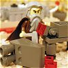

|
|
|
Leviticus 8 |
|
| 8:1
And the LORD spake unto Moses, saying, |

Aaron Becomes a Priest
|
| 8:2
Take Aaron and his sons with him, and the garments, and the anointing oil,
and a bullock for the sin offering, and two rams, and a basket of unleavened
bread;
|
| 8:3
And gather thou all the congregation together unto the door of the
tabernacle of the congregation.
|
| 8:4
And Moses did as the LORD commanded him; and the assembly was gathered
together unto the door of the tabernacle of the congregation. |
|
| 8:5
And Moses said unto the congregation, This is the thing which the LORD
commanded to be done. |
 (8:6-8) The curious girdle of the ephod and the Urim and Thummim (8:6-8) The curious girdle of the ephod and the Urim and Thummim
(8:6-7) "Moses brought Aaron and ... he girded him with the curious girdle of the ephod."
(8:8) "The Urim and Thummim"
The Urim and Thummim were like the two sides of a magic coin that could be flipped
to to give a yes or no answer to any question. They were also what
Joseph Smith used to translate the Book of
Mormon.
|
| 8:6
And Moses brought Aaron and his sons, and washed them with water.
|
| 8:7
And he put upon him the coat, and girded him with the girdle, and clothed
him with the robe, and put
the ephod upon him, and he girded him with the curious girdle of the
ephod, and bound it unto him therewith.
|
| 8:8
And he put the breastplate upon him: also he put in the breastplate the
Urim and the Thummim.
|
| 8:9
And he put the mitre upon his head; also upon the mitre, even upon his
forefront, did he put the golden plate, the holy crown; as the LORD
commanded Moses.
|
| 8:10
And Moses took the anointing oil, and anointed the tabernacle and all that
was therein, and sanctified them. |
|
| 8:11
And he sprinkled thereof upon the altar seven times, and anointed the
altar and all his vessels, both the laver and his foot, to sanctify them. |
 (8:14-32)
(8:14-32)
God's rules for ritual animal sacrifice
Moses does it all for God. First he kills
an animal; wipes the blood on Aaron's ears, thumbs, and big toes. Then he
sprinkles blood round about and waves the guts before the Lord. Finally he burns
the whole mess for "a sweet savour before the Lord."
(8:14-15) "Aaron and his sons laid
their hands upon the head of the bullock for the sin offering and he slew it."
(8:15) "Moses took the blood, and put it upon the horns of the altar round
about with his finger .. and poured the blood at the bottom of the altar."
(8:16) "And he took all the fat that was upon the inwards, and the caul above the liver,
and the two kidneys, and their fat, and Moses burned it upon the altar."
(8:17) "But the bullock, and his hide, his flesh,
and his dung, he burnt with fire without the camp; as the LORD commanded Moses."
(8:18-19) "Aaron and his sons laid their hands upon the head of the ram.
And he killed it."
(8:19) "Moses sprinkled the blood upon the altar round about."
(8:20) "And he cut the ram into pieces; and Moses burnt the head, and the pieces,
and the fat."
(8:21) "And he washed the inwards and the legs in water; and Moses burnt the whole
ram upon the altar: it was a burnt sacrifice for a sweet savour,
and an offering made by fire unto the LORD; as the LORD commanded Moses."
(8:22-23) "Aaron and his sons laid their hands upon the head of the ram. And he slew it."
(8:23) "Moses took of the blood of it, and put it upon the tip of Aaron's right ear,
and upon the thumb of his right hand, and upon the great toe of his right foot."
(8:24) "And he brought Aaron's sons, and Moses put of the blood upon the tip
of their right ear, and upon the thumbs of their right hands, and upon the great toes of their right feet:
and Moses sprinkled the blood upon the altar round about."
(8:25) "He took the fat, and the rump, and all the fat that was upon the inwards,
and the caul above the liver, and the two kidneys,
and their fat, and the right shoulder:"
|
| 8:12
And he poured of the anointing oil upon Aaron's head, and anointed him, to
sanctify him.
|
| 8:13
And Moses brought Aaron's sons, and put coats upon them, and girded them
with girdles, and put bonnets upon them; as the LORD commanded Moses.
|
| 8:14
And he brought the bullock for the sin offering: and Aaron and his sons laid
their hands upon the head of the bullock for the sin offering.
|
| 8:15
And he slew it; and Moses took the blood, and put it upon the horns of the altar round about
with his finger, and purified the altar, and poured the blood at
the bottom of the altar, and sanctified it, to make reconciliation upon it.
|
| 8:16
And he took all the fat
that was upon the inwards, and the caul above the liver, and the two
kidneys, and their fat, and Moses burned it upon the altar.
|
| 8:17
But the bullock, and
his hide, his flesh, and his dung, he burnt with fire without the camp; as
the LORD commanded Moses.
|
| 8:18
And he brought the ram for the burnt offering: and Aaron and his sons laid
their hands upon the head of the ram.
|
| 8:19
And he killed it; and Moses sprinkled the blood upon the altar round about.
|
| 8:20
And he cut the ram into pieces; and Moses burnt the head, and the pieces, and the fat.
|
| 8:21
And he washed the
inwards and the legs in water; and Moses burnt the whole ram upon the altar:
it was a burnt sacrifice for a sweet savour, and an offering made by
fire unto the LORD; as the LORD commanded Moses.
|
| 8:22
And he brought the other ram, the ram of consecration: and Aaron and his sons laid
their hands upon the head of the ram.
|
| 8:23
And he slew it, and Moses took of the
blood of it, and put it upon the tip of Aaron's right ear, and upon the
thumb of his right hand, and upon the great toe of his right foot.
|
| 8:24
And he brought Aaron's sons, and Moses put of the blood upon the tip of their right ear, and
upon the thumbs of their right hands, and upon the great toes of their right
feet: and Moses sprinkled the blood upon the altar round about.
|
| 8:25
And he took the fat,
and the rump, and all the fat that was upon the inwards, and the caul above
the liver, and the two kidneys, and their fat, and the right shoulder:
|
| 8:26
And out of the basket of unleavened bread, that was before the LORD, he
took one unleavened cake, and a cake of oiled bread, and one wafer, and put
them on the fat, and upon the right shoulder: |
|
| 8:27
And he put all upon
Aaron's hands, and upon his sons' hands, and waved them for a wave
offering before the LORD. |
(8:27) "And he put all upon Aaron's hands,
and upon his sons' hands, and waved them for a wave offering before the LORD."
(8:28) "Moses ... burnt them ... for a sweet savour."
(8:29) "Moses took the breast, and waved it for a wave offering before the LORD."
|
| 8:28
And Moses took them from off their hands, and burnt them on the altar upon
the burnt offering: they were consecrations for a sweet savour: it is an offering made by fire
unto the LORD.
|
| 8:29
And Moses took the
breast, and waved it for a wave offering before the LORD: for of
the ram of consecration it was Moses' part; as the LORD commanded Moses.
|
| 8:30
And Moses took of
the anointing oil, and of
the blood which was upon the altar, and sprinkled it upon Aaron, and upon
his garments, and upon his sons, and upon his sons' garments with him; and
sanctified Aaron, and his garments, and his sons, and his sons' garments
with him. |
(8:30) "And Moses took ... of the blood which was upon the altar,
and sprinkled it upon Aaron, and upon his garments, and upon his sons, and upon his sons' garments."
(8:31) "Moses said unto Aaron and to his sons, Boil the flesh."
(8:32) "And that which remaineth of the flesh .... shall ye burn with fire."
|
| 8:31
And Moses said unto
Aaron and to his sons, Boil the flesh at the door of the
tabernacle of the congregation: and there eat it with the bread that is in
the basket of consecrations, as I commanded, saying, Aaron and his sons
shall eat it.
|
| 8:32
And that which
remaineth of the flesh and of the bread shall ye burn with fire.
|
| 8:33
And ye shall not go out of the door of the tabernacle of the congregation
in seven days, until the days of your consecration be at an end: for seven
days shall he consecrate you. |
|
| 8:34
As he hath done this day, so the LORD hath commanded to do, to make an
atonement for you. |
|
| 8:35
Therefore shall ye abide at the door of the tabernacle of the congregation
day and night seven days, and keep the charge of the LORD, that ye die not:
for so I am commanded. |
|
| 8:36
So Aaron and his sons did all things which the LORD commanded by the hand
of Moses. |
|
|